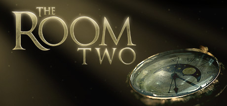
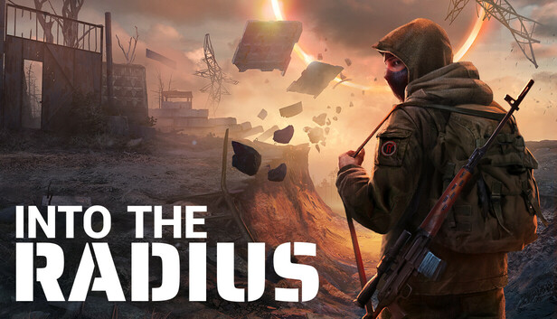
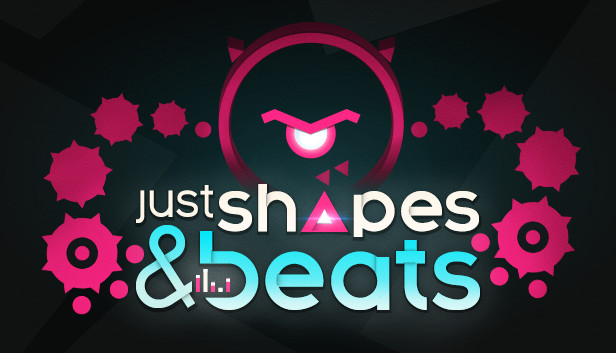
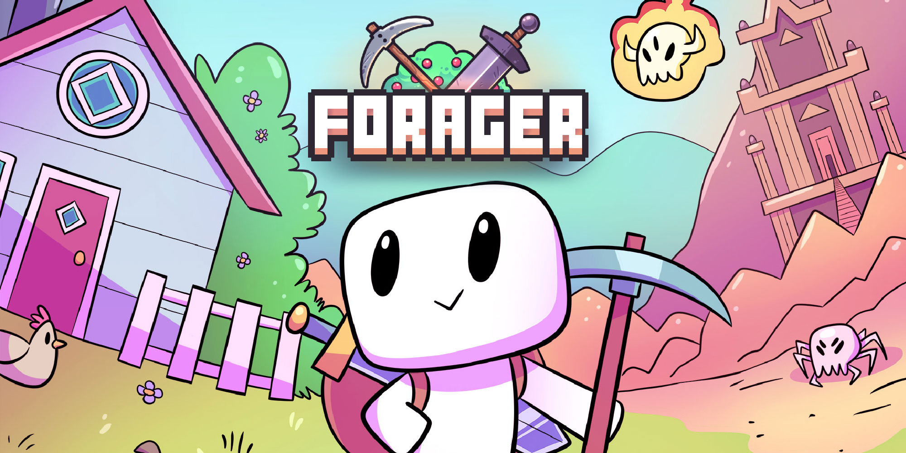
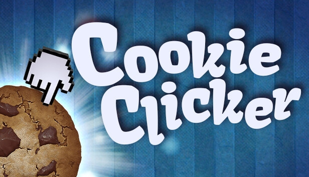
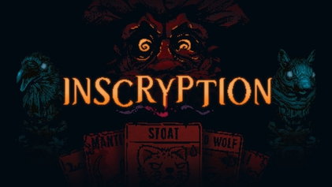
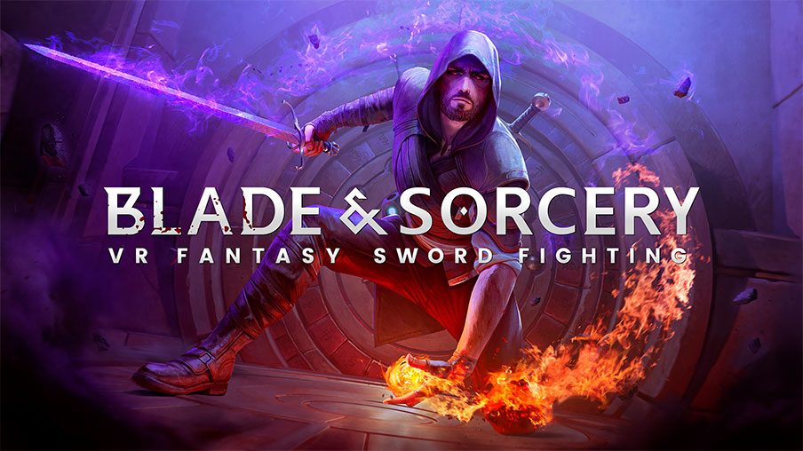
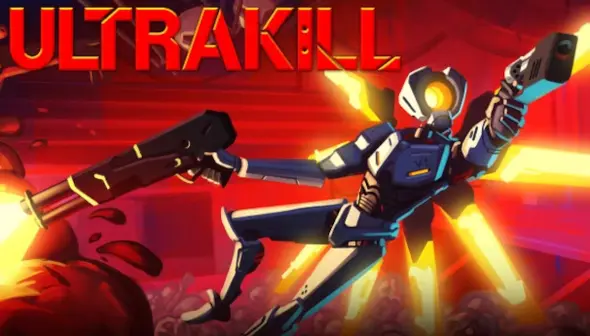

Oneshot

- Descripción: OneShot es un juego de aventuras y rompecabezas surrealista con perspectiva a vista de pájaro y una jugabilidad única. Tienes que guiar a un niño a través de un misterioso mundo en una misión para recuperar su sol, que murió hace mucho tiempo. El mundo sabe que existes.
- Género: Aventura, Casual, Indie
- Precio: 9.75€
- Valoración: Extremadamente positiva
- Fecha de salida: 9 de Diciembre de 2016
- Desarrollador: Future Cat LLC
- Editor: KOMODO
- Edad recomendada: Todas las edades
| Requisitos | Mínimos | Recomendados |
|---|---|---|
| Sistema operativo | Windows Vista o posterior | Windows 10 |
| Procesador | Intel Core 2 Duo | Intel Core i3 |
| RAM | 4 GB | 8 GB |
| Gráficos | OpenGL 2.1 compatible | OpenGL 3.0 compatible |
| DirectX | Versión 9.0c | Versión 11 |
| Almacenamiento | 200 MB de espacio disponible | 500 MB de espacio disponible |
Terraria

- Descripción: Terraria es un juego de aventuras y sandbox en 2D que te permite explorar, construir, luchar y sobrevivir en un mundo generado de manera procedural. ¡La aventura te espera!
- Género: Acción, Aventura, Indie
- Precio: 9.99€
- Valoración: Extremadamente positiva
- Fecha de salida: 16 de Mayo de 2011
- Desarrollador: Re-Logic
- Editor: Re-Logic
- Edad recomendada: Todas las edades
| Requisitos | Mínimos | Recomendados |
|---|---|---|
| Sistema operativo | Windows 7, 8, 8.1, 10 | Windows 10 |
| Procesador | 2.0 GHz | Dual Core 3.0 GHz |
| RAM | 2.5 GB | 4 GB |
| Gráficos | 128 MB VRAM, capaz de Shader Model 2.0+ | 256 MB VRAM, capaz de Shader Model 2.0+ |
| DirectX | Versión 9.0c | Versión 11 |
| Almacenamiento | 200 MB de espacio disponible | 200 MB de espacio disponible |
| Tarjeta de sonido | Compatible con DirectX | Compatible con DirectX |
Slime Rancher

- Descripción: Slime Rancher es un encantador juego de simulación en primera persona. Juega como Beatrix LeBeau, una joven ranchera que se embarca en una vida a mil años luz de la Tierra en el "Lejano, Lejano Oeste". Explora, recolecta y cría adorables slimes mientras descubres los secretos de este colorido mundo.
- Género: Aventura, Indie, Simulación
- Precio: 19.99€
- Valoración: Extremadamente positiva
- Fecha de salida: 1 de Agosto de 2017
- Desarrollador: Monomi Park
- Editor: Monomi Park
- Edad recomendada: Todas las edades
| Requisitos | Mínimos | Recomendados |
|---|---|---|
| Sistema operativo | Windows 7+ | Windows 7+ |
| Procesador | Dual Core 2.2GHz | Dual Core 2.2GHz |
| RAM | 4 GB | 8 GB |
| Gráficos | 512MB VRAM | 1GB VRAM |
| DirectX | Versión 11 | Versión 11 |
| Almacenamiento | 1 GB de espacio disponible | 1 GB de espacio disponible |
The Binding of Isaac: Rebirth

- Descripción: The Binding of Isaac: Rebirth es un juego de acción y exploración de mazmorras generado de manera procedural. Ayuda a Isaac a escapar de su madre enfrentándote a hordas de enemigos, descubriendo secretos y recolectando objetos únicos.
- Género: Acción, Aventura, Indie
- Precio: 14.99€
- Valoración: Extremadamente positiva
- Fecha de salida: 4 de Noviembre de 2014
- Desarrollador: Nicalis, Inc.
- Editor: Nicalis, Inc.
- Edad recomendada: Mayores de 16 años
| Requisitos | Mínimos | Recomendados |
|---|---|---|
| Sistema operativo | Windows XP | Windows 7+ |
| Procesador | Dual Core | Quad Core |
| RAM | 2 GB | 4 GB |
| Gráficos | Intel HD Graphics | 1GB VRAM |
| DirectX | Versión 9.0c | Versión 11 |
| Almacenamiento | 500 MB de espacio disponible | 500 MB de espacio disponible |
The Room Two
- Descripción: The Room Two es un juego de rompecabezas en 3D que te sumerge en un mundo de misterio y exploración. Resuelve acertijos intrincados y descubre secretos ocultos mientras avanzas a través de habitaciones llenas de enigmas.
- Género: Aventura, Indie
- Precio: 4.99€
- Valoración: Muy positiva
- Fecha de salida: 5 de Julio de 2016
- Desarrollador: Fireproof Games
- Editor: Fireproof Games
- Edad recomendada: Todas las edades
| Requisitos | Mínimos | Recomendados |
|---|---|---|
| Sistema operativo | Windows 7 | Windows 10 |
| Procesador | 2.0 GHz Dual Core | 2.8 GHz Quad Core |
| RAM | 2 GB | 4 GB |
| Gráficos | 512MB VRAM | 1GB VRAM |
| DirectX | Versión 9.0c | Versión 11 |
| Almacenamiento | 2 GB de espacio disponible | 2 GB de espacio disponible |
Into The Radius VR
- Descripción: Into The Radius VR es un juego de supervivencia y exploración en realidad virtual ambientado en un mundo postapocalíptico lleno de misterio y peligro. Explora la zona, recolecta recursos, lucha contra enemigos y descubre los secretos de este inquietante universo.
- Género: Acción, Aventura, Indie, Simulación
- Precio: 28.99€
- Valoración: Muy positiva
- Fecha de salida: 20 de Julio de 2020
- Desarrollador: CM Games
- Editor: CM Games
- Edad recomendada: Mayores de 16 años
| Requisitos | Mínimos | Recomendados |
|---|---|---|
| Sistema operativo | Windows 10 | Windows 10 |
| Procesador | Intel i5-7500 / Ryzen 5 1600 | Intel i7-9700K / Ryzen 7 3700X |
| RAM | 12 GB | 16 GB |
| Gráficos | NVIDIA GTX 1060 / AMD RX 580 | NVIDIA RTX 2070 / AMD RX 5700 XT |
| DirectX | Versión 11 | Versión 11 |
| Almacenamiento | 20 GB de espacio disponible | 20 GB de espacio disponible |
Geometry Dash

- Descripción: Geometry Dash es un juego de plataformas de ritmo rápido que te desafía a saltar y volar a través de niveles peligrosos llenos de obstáculos.
- Género: Indie
- Precio: 3.99€
- Valoración: Muy positiva
- Fecha de salida: 22 de Diciembre de 2014
- Desarrollador: RobTop Games
- Editor: RobTop Games
- Edad recomendada: Todas las edades
| Requisitos | Mínimos | Recomendados |
|---|---|---|
| Sistema operativo | Windows XP | Windows 10 |
| Procesador | 2.0 GHz | 2.0 GHz |
| RAM | 512 MB | 1 GB |
| Gráficos | Compatible con OpenGL 2.0 | Compatible con OpenGL 2.0 |
| Almacenamiento | 100 MB de espacio disponible | 100 MB de espacio disponible |
DAVE THE DIVER

- Descripción: DAVE THE DIVER es un juego de aventuras casual que combina exploración submarina y gestión de un restaurante de sushi.
- Género: Aventura, Casual, Indie
- Precio: 19.99€
- Valoración: Extremadamente positiva
- Fecha de salida: 28 de Junio de 2023
- Desarrollador: MINTROCKET
- Editor: MINTROCKET
- Edad recomendada: Todas las edades
| Requisitos | Mínimos | Recomendados |
|---|---|---|
| Sistema operativo | Windows 10 | Windows 10 |
| Procesador | Intel Core i3 Dual Core | Intel Core i5 Quad Core |
| RAM | 8 GB | 16 GB |
| Gráficos | NVIDIA GTX 750 Ti | NVIDIA GTX 1060 |
| Almacenamiento | 10 GB de espacio disponible | 10 GB de espacio disponible |
Balatro

- Descripción: Balatro es un juego de construcción de mazos roguelike que combina estrategia y humor en un mundo lleno de desafíos únicos.
- Género: Indie, Estrategia
- Precio: 14.99€
- Valoración: Extremadamente positiva
- Fecha de salida: 2 de Mayo de 2023
- Desarrollador: The Balatro Team
- Editor: The Balatro Team
- Edad recomendada: Todas las edades
| Requisitos | Mínimos | Recomendados |
|---|---|---|
| Sistema operativo | Windows 7 | Windows 10 |
| Procesador | Intel Core i3 | Intel Core i5 |
| RAM | 4 GB | 8 GB |
| Gráficos | Intel HD Graphics | NVIDIA GTX 960 |
| Almacenamiento | 2 GB de espacio disponible | 2 GB de espacio disponible |
Just Shapes & Beats
- Descripción: Just Shapes & Beats es un juego de acción musical cooperativo basado en evitar obstáculos al ritmo de la música.
- Género: Acción, Indie
- Precio: 19.99€
- Valoración: Extremadamente positiva
- Fecha de salida: 31 de Mayo de 2018
- Desarrollador: Berzerk Studio
- Editor: Berzerk Studio
- Edad recomendada: Todas las edades
| Requisitos | Mínimos | Recomendados |
|---|---|---|
| Sistema operativo | Windows 7 | Windows 10 |
| Procesador | Intel Core i3 | Intel Core i5 |
| RAM | 4 GB | 8 GB |
| Gráficos | Intel HD Graphics | NVIDIA GTX 960 |
| Almacenamiento | 1 GB de espacio disponible | 1 GB de espacio disponible |
Forager
- Descripción: Forager es un juego de mundo abierto inspirado en la exploración, la agricultura y la construcción de bases. Recolecta recursos, construye estructuras y expande tu base mientras exploras un mundo lleno de secretos.
- Género: Aventura, Indie, Simulación
- Precio: 19.99€
- Valoración: Muy positiva
- Fecha de salida: 18 de Abril de 2019
- Desarrollador: HopFrog
- Editor: Humble Games
- Edad recomendada: Todas las edades
| Requisitos | Mínimos | Recomendados |
|---|---|---|
| Sistema operativo | Windows XP | Windows 10 |
| Procesador | Intel Core 2 Duo | Intel i5 |
| RAM | 2 GB | 4 GB |
| Gráficos | 512 MB VRAM | 1 GB VRAM |
| Almacenamiento | 200 MB de espacio disponible | 200 MB de espacio disponible |
Cookie Clicker
- Descripción: Cookie Clicker es un juego incremental en el que haces clic para hornear galletas y desbloquear mejoras para producir más galletas automáticamente. ¡Expande tu imperio de galletas!
- Género: Casual, Indie
- Precio: 4.99€
- Valoración: Extremadamente positiva
- Fecha de salida: 1 de Septiembre de 2021
- Desarrollador: Orteil
- Editor: Playsaurus
- Edad recomendada: Todas las edades
| Requisitos | Mínimos | Recomendados |
|---|---|---|
| Sistema operativo | Windows 7 | Windows 10 |
| Procesador | Doble núcleo de 2.33 GHz | Doble núcleo de 2.33 GHz |
| RAM | 1 GB | 2 GB |
| Gráficos | Compatible con DirectX 9.0 | Compatible con DirectX 9.0 |
| Almacenamiento | 350 MB de espacio disponible | 350 MB de espacio disponible |
Papers, Please

- Descripción: Papers, Please es un juego de simulación en el que trabajas como inspector de inmigración en un estado distópico. Examina documentos y toma decisiones que afectarán la vida de las personas y el destino de tu familia.
- Género: Indie, Simulación
- Precio: 9.75€
- Valoración: Extremadamente positiva
- Fecha de salida: 8 de Agosto de 2013
- Desarrollador: Lucas Pope
- Editor: 3909
- Edad recomendada: Mayores de 16 años
| Requisitos | Mínimos | Recomendados |
|---|---|---|
| Sistema operativo | Windows XP | Windows 7 |
| Procesador | 1.5 GHz Core2Duo | 2.0 GHz Core2Duo |
| RAM | 2 GB | 4 GB |
| Gráficos | OpenGL 1.4 compatible | OpenGL 2.0 compatible |
| Almacenamiento | 100 MB de espacio disponible | 100 MB de espacio disponible |
Inscryption
- Descripción: Inscryption es un juego de construcción de mazos que combina elementos de roguelike, rompecabezas y terror psicológico. Adéntrate en una experiencia única llena de misterios y sorpresas.
- Género: Indie, Estrategia
- Precio: 19.99€
- Valoración: Extremadamente positiva
- Fecha de salida: 19 de Octubre de 2021
- Desarrollador: Daniel Mullins Games
- Editor: Devolver Digital
- Edad recomendada: Mayores de 16 años
| Requisitos | Mínimos | Recomendados |
|---|---|---|
| Sistema operativo | Windows 7 | Windows 10 |
| Procesador | Intel Core i5 | Intel Core i7 |
| RAM | 8 GB | 16 GB |
| Gráficos | NVIDIA GTX 650 | NVIDIA GTX 970 |
| Almacenamiento | 2 GB de espacio disponible | 2 GB de espacio disponible |
Project Zomboid

- Descripción: Project Zomboid es un juego de supervivencia en mundo abierto donde debes sobrevivir en un apocalipsis zombi. Recolecta recursos, construye refugios y enfrenta desafíos mientras intentas sobrevivir el mayor tiempo posible.
- Género: Indie, Simulación, Supervivencia
- Precio: 19.50€
- Valoración: Muy positiva
- Fecha de salida: 8 de Noviembre de 2013
- Desarrollador: The Indie Stone
- Editor: The Indie Stone
- Edad recomendada: Mayores de 16 años
| Requisitos | Mínimos | Recomendados |
|---|---|---|
| Sistema operativo | Windows 10 | Windows 10 |
| Procesador | Intel Core 2 Duo 2.77GHz | Intel i5 2.9GHz |
| RAM | 4 GB | 8 GB |
| Gráficos | NVIDIA GeForce 8600 | NVIDIA GTX 660 |
| Almacenamiento | 3 GB de espacio disponible | 3 GB de espacio disponible |
Undertale

- Descripción: Undertale es un juego de rol donde no tienes que matar a nadie. Explora un mundo subterráneo lleno de personajes únicos y toma decisiones que afectarán la historia.
- Género: Indie, Rol
- Precio: 9.99€
- Valoración: Extremadamente positiva
- Fecha de salida: 15 de Septiembre de 2015
- Desarrollador: tobyfox
- Editor: tobyfox
- Edad recomendada: Todas las edades
| Requisitos | Mínimos | Recomendados |
|---|---|---|
| Sistema operativo | Windows XP, Vista, 7, 8, 10 | Windows 7, 8, 10 |
| Procesador | 2 GHz | 2 GHz |
| RAM | 2 GB | 4 GB |
| Gráficos | 128 MB VRAM | 128 MB VRAM |
| Almacenamiento | 200 MB de espacio disponible | 200 MB de espacio disponible |
Blade And Sorcery
- Descripción: Blade And Sorcery es un juego de combate en realidad virtual con físicas avanzadas. Experimenta batallas cuerpo a cuerpo, a distancia y mágicas en un entorno sandbox.
- Género: Acción, Indie, Simulación
- Precio: 29.99€
- Valoración: Muy positiva
- Fecha de salida: 17 de Junio de 2024
- Desarrollador: WarpFrog
- Editor: WarpFrog
- Edad recomendada: Mayores de 16 años
| Requisitos | Mínimos | Recomendados |
|---|---|---|
| Sistema operativo | Windows 10 | Windows 10 |
| Procesador | Intel i5-4590 / AMD FX 8350 | Intel i7-9700K / AMD Ryzen 5 3600 |
| RAM | 8 GB | 16 GB |
| Gráficos | NVIDIA GTX 970 / AMD RX 480 | NVIDIA RTX 2060 / AMD RX 5700 |
| Almacenamiento | 20 GB de espacio disponible | 20 GB de espacio disponible |
Ultrakill
- Descripción: Ultrakill es un frenético juego de disparos en primera persona que combina mecánicas de FPS clásicos con un sistema de combate basado en combos y estilo.
- Género: Acción, Indie
- Precio: 23.99€
- Valoración: Extremadamente positiva
- Fecha de salida: 3 de Septiembre de 2020
- Desarrollador: Arsi "Hakita" Patala
- Editor: New Blood Interactive
- Edad recomendada: Mayores de 16 años
| Requisitos | Mínimos | Recomendados |
|---|---|---|
| Sistema operativo | Windows 7 | Windows 10 |
| Procesador | Intel Core 2 Duo E8400 | Intel Core i5-4690K |
| RAM | 2 GB | 4 GB |
| Gráficos | GeForce GTX 460 | GeForce GTX 970 |
| Almacenamiento | 2 GB de espacio disponible | 2 GB de espacio disponible |
Hollow Knight

- Descripción: Hollow Knight es un juego de acción y aventuras en 2D que te lleva a explorar un vasto mundo subterráneo lleno de insectos y misterios.
- Género: Acción, Aventura, Indie
- Precio: 14.79€
- Valoración: Extremadamente positiva
- Fecha de salida: 24 de Febrero de 2017
- Desarrollador: Team Cherry
- Editor: Team Cherry
- Edad recomendada: Todas las edades
| Requisitos | Mínimos | Recomendados |
|---|---|---|
| Sistema operativo | Windows 7 | Windows 10 |
| Procesador | Intel Core 2 Duo E5200 | Intel Core i5 |
| RAM | 4 GB | 8 GB |
| Gráficos | GeForce 9800GTX | GeForce GTX 560 |
| Almacenamiento | 9 GB de espacio disponible | 9 GB de espacio disponible |
Celeste

- Descripción: Celeste es un desafiante juego de plataformas en el que ayudas a Madeline a escalar la montaña Celeste mientras enfrentas obstáculos y descubres una emotiva historia.
- Género: Indie, Plataformas
- Precio: 19.50€
- Valoración: Extremadamente positiva
- Fecha de salida: 25 de Enero de 2018
- Desarrollador: Maddy Makes Games
- Editor: Maddy Makes Games
- Edad recomendada: Todas las edades
| Requisitos | Mínimos | Recomendados |
|---|---|---|
| Sistema operativo | Windows 7 | Windows 10 |
| Procesador | Intel Core i3 M380 | Intel Core i5 |
| RAM | 2 GB | 4 GB |
| Gráficos | Intel HD 4000 | GeForce GTX 960 |
| Almacenamiento | 1.2 GB de espacio disponible | 1.2 GB de espacio disponible |
Dead Cells

- Descripción: Dead Cells es un juego de acción y plataformas roguelike en el que exploras un castillo en constante cambio mientras enfrentas enemigos y mejoras tus habilidades.
- Género: Acción, Indie, Roguelike
- Precio: 24.99€
- Valoración: Extremadamente positiva
- Fecha de salida: 7 de Agosto de 2018
- Desarrollador: Motion Twin
- Editor: Motion Twin
- Edad recomendada: Mayores de 12 años
| Requisitos | Mínimos | Recomendados |
|---|---|---|
| Sistema operativo | Windows 7 | Windows 10 |
| Procesador | Intel i5 | Intel i7 |
| RAM | 2 GB | 4 GB |
| Gráficos | GeForce GTX 460 | GeForce GTX 970 |
| Almacenamiento | 500 MB de espacio disponible | 500 MB de espacio disponible |
Stardew Valley

- Descripción: Stardew Valley es un juego de simulación en el que heredas una granja y debes cultivarla, criar animales y formar relaciones con los habitantes del pueblo.
- Género: Indie, Simulación, Rol
- Precio: 13.99€
- Valoración: Extremadamente positiva
- Fecha de salida: 26 de Febrero de 2016
- Desarrollador: ConcernedApe
- Editor: ConcernedApe
- Edad recomendada: Todas las edades
| Requisitos | Mínimos | Recomendados |
|---|---|---|
| Sistema operativo | Windows 7 | Windows 10 |
| Procesador | Intel Core 2 Duo | Intel Core i5 |
| RAM | 2 GB | 4 GB |
| Gráficos | 256 MB VRAM | 512 MB VRAM |
| Almacenamiento | 500 MB de espacio disponible | 500 MB de espacio disponible |
Omori

- Descripción: Omori es un juego de rol psicológico que explora temas de amistad, pérdida y superación personal en un mundo surrealista lleno de emociones.
- Género: Indie, Rol
- Precio: 16.79€
- Valoración: Extremadamente positiva
- Fecha de salida: 25 de Diciembre de 2020
- Desarrollador: OMOCAT, LLC
- Editor: OMOCAT, LLC
- Edad recomendada: Mayores de 12 años
| Requisitos | Mínimos | Recomendados |
|---|---|---|
| Sistema operativo | Windows 8 | Windows 10 |
| Procesador | Intel N4100 | Intel i3 |
| RAM | 4 GB | 8 GB |
| Gráficos | Intel UHD 600 | GeForce GTX 660 |
| Almacenamiento | 2 GB de espacio disponible | 2 GB de espacio disponible |